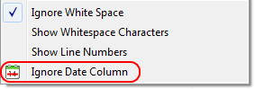
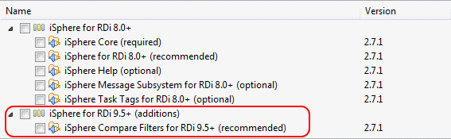

This extension is included in the iSphere Compare Filters plug-in. It fixes the problem that the date of all source line dates were set to the current date when a source member is saved from the iSphere Compare/Merge editor and with option Don't consider date.
Starting with RDi 9.5 (Eclipse 4.4) iSphere uses a compare filter to ignore the date column to preserve the date of the source lines.
The Don't consider date (ignore date) option is also available from the context menu of the compare editor:

You need to select "Help > Install New Software..." to install the compare filter extension, because "Help > Check for Updates" does not install new features. It only updates already installed features.
Make sure to select the following plug-in:
